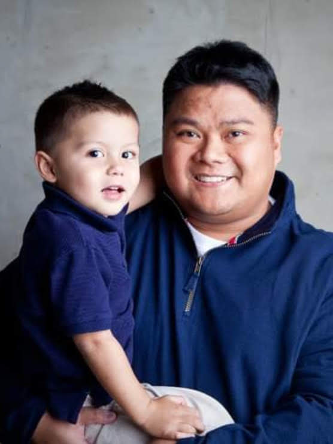

About Me
Hi, my name is Nephi Flores. I am a student at the University of Utah coding bootcamp. My goal is to become a front-end and back-end developer who can deploy their coding skills in a successful career after graduation. My first experience with web design was back in the 90's where I made personal and fan webpages in good ol' Geocities. I was fixtated on hardware side of computers at the time, so I learned to build and fix them. Now, it is time to learn new skills and expand my technology abilities to software in addition to hardware.
I was born in the Philippines and moved to Utah at the age of twelve. Some of my hobbies include being an avid BYU football fan, traveling, and being with my family. My beautifull wife and I have been married for 21 years and have six wonderful children; three girls and three boys, all in the age range of three to seventeen.
I am excited for the future and I look forward to a new career in coding. Thanks for visiting and have a nice day!